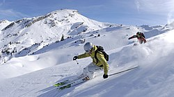

Kalnu slēpošana ir ziemas sporta (slēpošanas) veids, kurā sacensības notiek vairākās disciplīnās. Kalnu slēpošanā sportisti slēpo pa kalna nogāzi, distances laikā apslēpojot trasē izvietotos šķēršļus. Nozīmīgākās starptautiskās sacensības kalnu slēpošanā ir Pasaules kausa izcīņa, kas notiek visas sezonas garumā daudzos posmos, kā arī Pasaules čempionāts un olimpiskās spēles.
